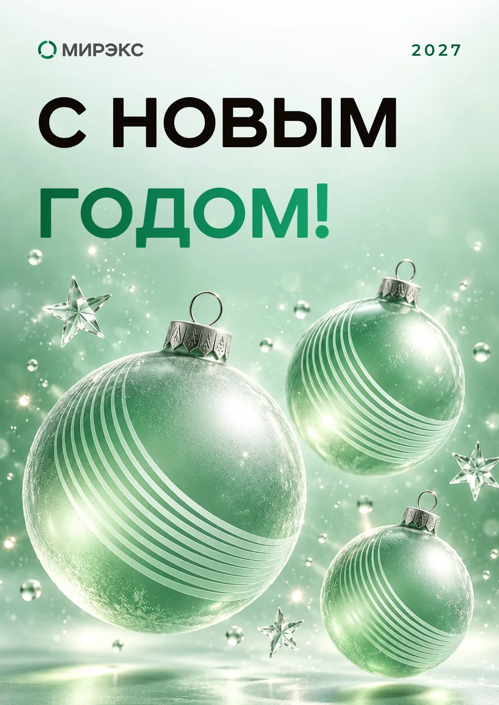
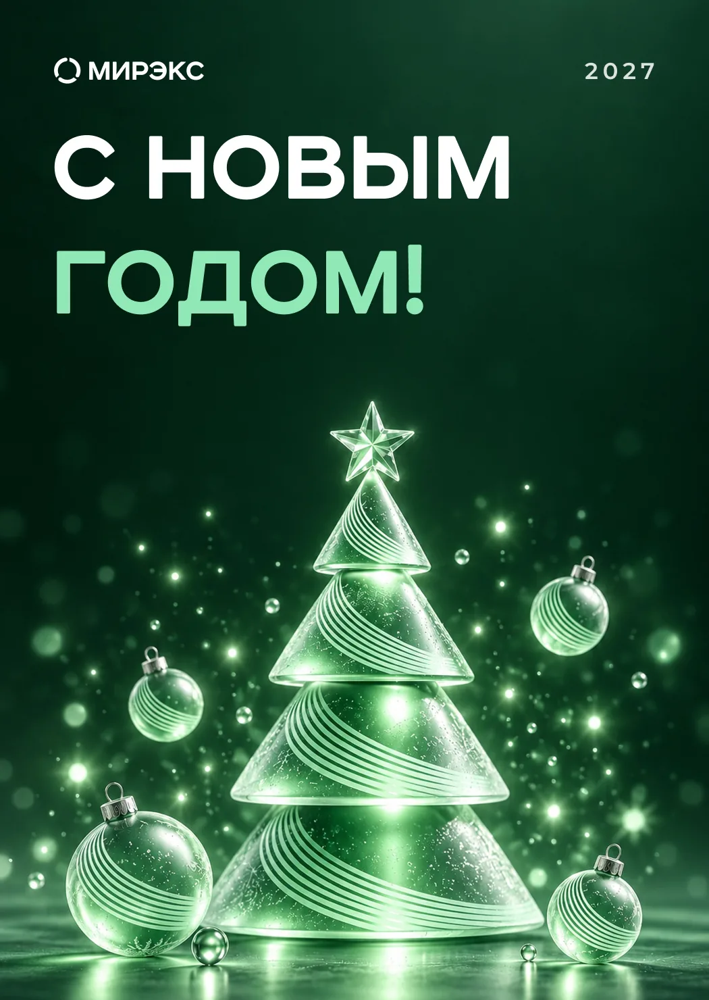
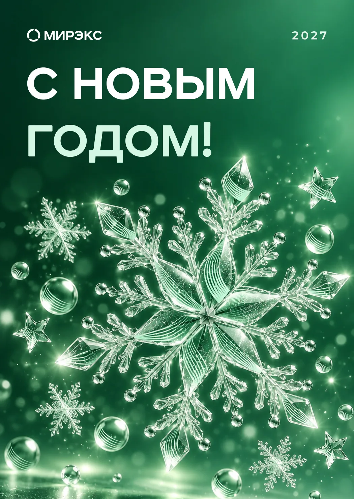

New Year cards
Branded New Year cards, chosen from 23 concepts over six rounds.
New Year cards
Six rounds and 23 concepts — frosted-glass scenes, flat illustration drawn in Figma, ring and garland variations — until the client picked three. The brand arc pattern became the decoration on the baubles and the tree. Scenes are AI-generated; I extended the top of each scene for headline space and prepared files with 3 mm bleed.


